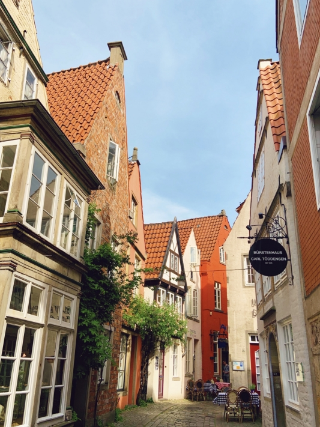

<div class="container-fluid animated fadeInUp" style="padding-top: 80px;padding-bottom: 80px">
    <div class="row mt-5 align-items-center">

        <div class=" offset-lg-2 col-lg-4 p-4 col-md-12 col-sm-12">

            
           

        </div>

        <div class="col-lg-5 col-md-8 p-4 text-justify masterclassDescription" style="letter-spacing: 1px; font-size: 12pt">
            <h4 style="color: #303f38">About Us</h4>
            <br />
            <br />

            <p>建立Toneartiv這個平台主要的動機是，希望能夠幫助想前往歐洲來趟音樂之旅，但卻在找尋過程中迷路的朋友們。♩ ♫ 目前分享的內容，主要以德國、奧地利、瑞士的音樂營及音樂節為主。
               我們將不定期為大家新增活動，提供您更有效率地查詢並準確的取得課程資訊。
            <p>點開<a href="index.html">首頁</a>，輸入關鍵字搜尋，例如:樂器、教授姓名、日期、音樂營名稱...等，亦可透過進階搜尋輸入學費預算(注意:費用細節請閱讀內文，可至官網查詢或透過聯絡我們諮詢)
            <p>搜尋結果會藉由我們的翻譯，讓您初步了解活動內容，由內文中的快速鍵取得官方網站連結、教授介紹、報名連結、報名資格以及報名表等。</p>
            <p>目前德國的音樂營大致上分為三類型:</p>
            <ul style="list-style-type:disc;">
                <li>大規模音樂營活動(在每年一個特定的時間舉辦/給單一樂器或同時多樂器)</li>
                <li>教授親自策劃的小編制音樂營(日期不固定，通常是教授在音樂院相關科系佈告欄放置訊息，或在私人社交平台分享)</li>
                <li>藝術基金會定期規劃項目(幾乎一整年都有活動/每個時段邀請到不同教授任教/非常適合想避開寒暑假人潮到歐洲遊學的朋友)</li>
            </ul>
            <p>Toneartiv編輯小團隊目前皆居住於德國，我們在這裡除了為大家整理官方網站上和文宣上常見的活動以外，也盡力透過管道取得小編制的課程資訊提供給大家。</p>
            <p>目前提供音樂營相關諮詢,代理報名,當地陪同音樂營行程,翻譯等服務。</p>
            <p>我們期待您的意見回饋，對於德國留學以及遊學項目有疑惑，也歡迎<a href="contacts.html">來信詢問</a>!😊 </p>

        </div>

    </div>

</div>
